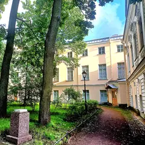
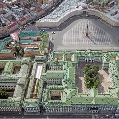
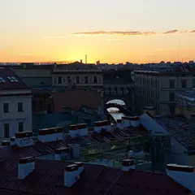
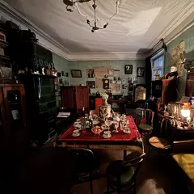
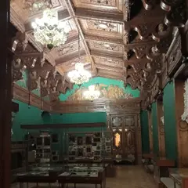
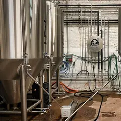
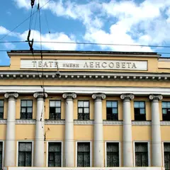
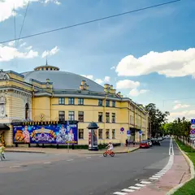
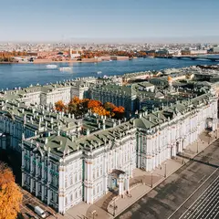
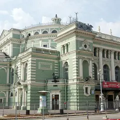

Подборку собрали 5 ноября, прошедшие события скрыты. Свежая афиша — на главной
Будний вечер · данные на 19 октября
Куда сходить вечером после работы
В будний вечер не хочется ехать через весь город. Здесь 88 коротких планов: одна-две точки рядом друг с другом и чек примерно до 3 000 ₽ на человека, 54 из них — в центре. Ниже — 8 вечерних событий в ближайшие будни.
- 88 планов
- 8 событий
Короткие планы на вечер 24 из 88
- Александринский театр · Театр · м. Гостиный двор
- 5 минут пешкомOy! · Коктейльный бар
Классика в новой режиссуре и ложи в золоте старейшего драмтеатра, а потом 5 минут пешком — мартини-бар с устрицами.
Открыть план: Александринка и мартини с устрицамиПозвать сюда: Александринка и мартини с устрицами
Фото: Bene Riobó, CC BY-SA 4.0 · Wikimedia Commons

- Музей Анны Ахматовой в Фонтанном доме · Музей · м. Маяковская
- 6 минут пешкомSalone Pasta&Bar · Итальянский ресторан
Квартира Ахматовой во флигеле Фонтанного дома и тихий сад за ним, а потом 6 минут пешком вдоль Фонтанки — свежая паста без лишней торжественности.
Открыть план: Ахматова и паста на ФонтанкеПозвать сюда: Ахматова и паста на Фонтанке
Фото: MilanSPb, CC BY-SA 4.0 · Wikimedia Commons

- Дворцовая площадь · Площадь · м. Адмиралтейская
- 9 минут пешкомЧАО Какао · Какаочная
Арка Главного штаба и Александровская колонна в вечерней подсветке, а потом 9 минут пешком — густой горячий шоколад из окошка какаочной.
Открыть план: Дворцовая и горячий шоколадПозвать сюда: Дворцовая и горячий шоколад
Фото: Наталья Филатова, CC BY 3.0 · Wikimedia Commons

- Государственная академическая Капелла · Концертный зал · м. Адмиралтейская
- 2 минуты пешкомBellevue · Ресторан
Хор или симфония в старинном зале с идеальной акустикой у Певческого моста, а через пару минут пешком — ужин над крышами у Дворцовой.
Открыть план: Капелла и ужин с видом на ДворцовуюПозвать сюда: Капелла и ужин с видом на Дворцовую
Фото: Moneycantbuy, CC BY-SA 4.0 · Wikimedia Commons

- Музей Довлатова · Музей · м. Достоевская
- 5 минут пешкомDuo Asia · Паназиатский ресторан
Квартира Сергея Довлатова и Ленинград 70-х в одном доме, а потом прогулка по Рубинштейна до Duo Asia — 5 минут пешком.
Открыть план: Ленинград Довлатова и ужин на РубинштейнаПозвать сюда: Ленинград Довлатова и ужин на Рубинштейна
Фото: Kommunalka1912, CC BY-SA 4.0 · Wikimedia Commons

- Театр музыкальной комедии · Театр · м. Гостиный двор
- 8 минут пешкомМама Тата · Кафе
Мюзикл или оперетта в нарядном зале Театра музыкальной комедии, а потом 8 минут пешком — хачапури и сытные салаты в «Маме Тате».
Открыть план: Мюзикл на Итальянской и домашняя кухняПозвать сюда: Мюзикл на Итальянской и домашняя кухня
Фото: Книжная пыль, CC BY-SA 4.0 · Wikimedia Commons

- Siberia · Приватная баня · м. Нарвская
- 7 минут пешкомAF Brew Taproom · Крафтовый бар
Камерный банный клуб у Обводного: отдельная парная и парение с мастером, а потом 7 минут пешком — флагманский тапрум AF Brew.
Открыть план: Парение с мастером и тапрум AF BrewПозвать сюда: Парение с мастером и тапрум AF Brew
Фото: НАндреев, CC BY-SA 4.0 · Wikimedia Commons
- Спас на Крови · Музей · м. Невский проспект
- 5 минут пешкомDaiquiri · Коктейльный бар
Храм, покрытый мозаикой изнутри, пока он открыт, а потом 5 минут пешком — ночной бар с десятками вариаций дайкири до четырёх утра.
Открыть план: Спас на Крови и ночь дайкириПозвать сюда: Спас на Крови и ночь дайкири
Фото: Рустам Абдрахимов, CC BY 3.0 · Wikimedia Commons

- Театр им. Ленсовета · Театр · м. Достоевская
- 3 минуты пешкомDuo Asia · Паназиатский ресторан
Яркий режиссёрский спектакль у Владимирской, а через пара минут пешком — севиче, лапша и сильные десерты в Duo Asia на Рубинштейна.
Открыть план: Театр Ленсовета и Азия от DuoПозвать сюда: Театр Ленсовета и Азия от Duo
Фото: Анастасия Юрьевна Львова, CC BY-SA 4.0 · Wikimedia Commons

- Цирк на Фонтанке · Цирк · м. Гостиный двор
- 2 минуты пешкомSalone Pasta&Bar · Итальянский ресторан
Акробаты под куполом старейшего каменного цирка России — смеяться и ахать вместе, а после пара минут пешком — свежая паста на Фонтанке.
Открыть план: Цирк на Фонтанке и пастаПозвать сюда: Цирк на Фонтанке и паста
Фото: Никонико962, CC BY-SA 4.0 · Wikimedia Commons

- Эрмитаж — Зимний дворец · Музей · м. Адмиралтейская
- 5 минут пешкомBellevue · Ресторан
Парадные залы Зимнего дворца, пока не устали ноги, а потом 5 минут пешком — ужин на верхнем этаже отеля у Дворцовой с панорамой крыш и соборов.
Открыть план: Эрмитаж и ужин над крышамиПозвать сюда: Эрмитаж и ужин над крышами
Фото: Никонико962, CC BY-SA 4.0 · Wikimedia Commons
- Ботанический сад Петра Великого · Сад · м. Петроградская
- 7 минут пешкомBig Wine Freaks · Винный бар
Японский сад и оранжереи с тропиками, а потом 7 минут пешком — шампань-бар, с которого началась гастроулица на Инструментальной.
Открыть план: Ботанический сад и шампань-барПозвать сюда: Ботанический сад и шампань-бар
Фото: Александровы АГ, CC BY-SA 4.0 · Wikimedia Commons
- Brooms · Баня-спа · м. Балтийская
- 1 минута пешкомF11 · Бар на крыше
Авторские парения, хаммам и купели в небольшой бане-спа, а потом через дорогу — бар на 18-м этаже с видом на Исаакий.
Открыть план: Банный ритуал и коктейли на крышеПозвать сюда: Банный ритуал и коктейли на крыше
- Кинотеатр «Аврора» · Кинотеатр · м. Гостиный двор
- 2 минуты пешкомProstovino · Винный бар
Фильм в старейшем кинотеатре города, а через пара минут пешком — винный бар с доступными бокалами и простыми закусками.
Открыть план: Бархатный зал «Авроры» и бокал винаПозвать сюда: Бархатный зал «Авроры» и бокал вина
- Во весь голос · Книжный магазин · м. Чернышевская
- 1 минута пешкомХроники · Рюмочная
Места для чтения и встречи с авторами в «Во весь голос», а через дорогу — бар-рюмочная с творческой публикой.
Открыть план: Большой книжный и рюмочнаяПозвать сюда: Большой книжный и рюмочная
- Ruc's Heaven · Винный бар · м. Площадь Восстания
- 3 минуты пешкомПляски · Танцевальный бар
Кава, альбариньо и винные коктейли в баре на Песках, а через пару минут — танцевальный бар с диско-караоке по субботам.
Открыть план: Вино на Песках и танцыПозвать сюда: Вино на Песках и танцы
- Бертгольд Центр · Креативное пространство · м. Садовая
- 3 минуты пешкомСеверянин · Ресторан
Галереи и лавки во дворе бывшей фабрики, а через пара минут пешком — кухня русского Севера в зале, похожем на квартиру путешественника, с камином.
Открыть план: Двор Бертгольда и ужин у каминаПозвать сюда: Двор Бертгольда и ужин у камина
- Дегтярные бани · Банный комплекс · м. Площадь Восстания
- 1 минута пешкомБанщики · Ресторан
Несколько классов, хаммам и купели в большом банном комплексе, а ужин — в соседнем ресторане «Банщики»: пироги, заготовки и шашлык.
Открыть план: Дегтярные бани и ужин в «Банщиках»Позвать сюда: Дегтярные бани и ужин в «Банщиках»
- Giallo Bistro · Итальянское бистро · м. Площадь Восстания
- 3 минуты пешкомStage StandUp Club · Стендап-клуб
Ужин в камерном бистро у площади Восстания, а через пара минут пешком — первый стендап-клуб города: если разговор не клеится, смех всё исправит.
Открыть план: Итальянский ужин и стендапПозвать сюда: Итальянский ужин и стендап
- Взаперти на Соляном · Квест · м. Чернышевская
- 15 минут пешкомBlackchops · Гастропаб
Киношные сюжеты на двух этажах квест-центра, а потом 15 минут пешком — стейки, бургеры и пиво в гастропабе у Фонтанки.
Открыть план: Квест у Чернышевской и мясной гастропабПозвать сюда: Квест у Чернышевской и мясной гастропаб
- КиберПрайд · Компьютерный клуб · м. Площадь Восстания
- 2 минуты пешкомВарштайнер Форум · Пивной ресторан
Клуб у Московского вокзала, открытый без перерыва, а через дорогу — разливной Warsteiner и карривурст.
Открыть план: Клуб на Невском и немецкое пивоПозвать сюда: Клуб на Невском и немецкое пиво
- Все свободны · Книжный магазин · м. Чернышевская
- 4 минуты пешкомGiallo Bistro · Итальянское бистро
Полистайте книги на мансарде уютного независимого книжного, а потом 4 минуты пешком — камерное итальянское бистро, которое часто советуют для первого свидания.
Открыть план: Книжный на Некрасова и итальянское бистроПозвать сюда: Книжный на Некрасова и итальянское бистро
- Конец прекрасной эпохи · Книжный магазин и бар · м. Чернышевская
- 3 минуты пешкомMeal · Ресторан
Диванчики, приглушённый свет и стихи в книжном-баре «Конец прекрасной эпохи», а через пара минут пешком — смелая авторская кухня ресторана Meal.
Открыть план: Книжный-бар и сеты на ферментацииПозвать сюда: Книжный-бар и сеты на ферментации
- N7 Омега · Компьютерный клуб · м. Площадь Восстания
- 1 минута пешкомБанщики · Ресторан
Круглосуточный клуб на Невском — удобная точка сбора, — а потом через пару минут пешком ужин с пирогами и шашлыком в «Банщиках».
Открыть план: Командная игра у Восстания и ужинПозвать сюда: Командная игра у Восстания и ужин

Вечерние события в будни 8

Мариинский театр · м. Садовая · 6 250–17 000 ₽ · 6+
Главный балет Чайковского на исторической сцене Мариинки, в классической редакции Константина Сергеева. Около трёх часов с двумя антрактами — повод нарядиться.
Подробнее: Лебединое озероПозвать сюда: Лебединое озероБилеты : Лебединое озеро (страница с билетами, откроется в новой вкладке)
Фото: Jaimrsilva, CC BY-SA 4.0 · Wikimedia Commons
Commode · м. Маяковская · 390–1 990 ₽ · 18+
У микрофона только девушки-комики из Петербурга и Москвы: про бывших, свидания и всё наболевшее. Идёт почти каждый вечер на Невском — готовый план для девичника.
Подробнее: Стендап по-женскиПозвать сюда: Стендап по-женскиБилеты : Стендап по-женски (страница с билетами, откроется в новой вкладке)
Aurora Concert Hall · м. Площадь Ленина · 1 200–2 900 ₽ · 16+
Трибьют-проект, который с 2008 года играет Pink Floyd вживую и с большим светом. Недорогой вечер, если «The Wall» и «Dark Side of the Moon» — музыка вашей юности.
Подробнее: Saint Petersburg Pink Floyd ShowПозвать сюда: Saint Petersburg Pink Floyd ShowБилеты : Saint Petersburg Pink Floyd Show (страница с билетами, откроется в новой вкладке)
Замок на Невском · м. Маяковская · от 1 600 ₽ · 12+
Иммерсивное мистическое шоу: герои «Шинели», «Носа» и «Вия» в одном сюжете, а зритель может вмешаться в ход действия. По пятницам и субботам в 19:00, недорого.
Подробнее: Петербург ГоголяПозвать сюда: Петербург ГоголяБилеты : Петербург Гоголя (страница с билетами, откроется в новой вкладке)
Отель «Москва» · м. Площадь Александра Невского · 1 290–2 990 ₽ · 18+
Сборный концерт: пять хедлайнеров с телешоу и интернет-проектов, один из них ведёт вечер. Зал в отеле у Александро-Невской лавры, поздний старт — формат для компании.
Подробнее: Главный стендапПозвать сюда: Главный стендапБилеты : Главный стендап (страница с билетами, откроется в новой вкладке)
Театр им. Комиссаржевской · м. Гостиный двор · 300–4 000 ₽ · 18+
Булгаковская авантюра времён НЭПа: под вывеской ателье Зоя Пельц копит деньги, чтобы увезти любимого графа в Ниццу. Чёрный юмор, мистика и криминал.
Подробнее: Зойкина квартираПозвать сюда: Зойкина квартираБилеты : Зойкина квартира (страница с билетами, откроется в новой вкладке)
БКЗ «Октябрьский» · м. Площадь Восстания · 3 200–15 000 ₽ · 12+
Шахрин и «Чайф» везут программу к 40-летию Свердловского рок-клуба: хиты плюс редкие песни. Уральский рок в академичном БКЗ — сидячий, но очень душевный вечер.
Подробнее: ЧайфПозвать сюда: ЧайфБилеты : Чайф (страница с билетами, откроется в новой вкладке)
Мариинский-2 · м. Садовая · от 2 000 ₽ · 6+
Цикл лекций Ольги Розановой о зарубежных мастерах, работавших на Мариинской сцене. Встречи раз в месяц во втором здании — повод прийти в театр не только на спектакль.
Подробнее: Ольга Розанова. Зарубежные мастера на Мариинской сценеПозвать сюда: Ольга Розанова. Зарубежные мастера на Мариинской сценеБилеты : Ольга Розанова. Зарубежные мастера на Мариинской сцене (страница с билетами, откроется в новой вкладке)
Как позвать
- Выбери план, место или событие — в карточке адрес, цены и маршрут в Яндекс Картах.
- Нажми «Позвать сюда» — соберётся приглашение-игра для свидания или голосование для компании.
- Отправь ссылку в любой мессенджер: тебе ответят, а компания отметит, куда и когда может. Бесплатно и без регистрации.